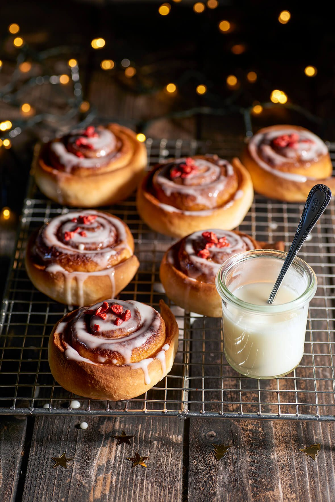

Ingredientes

- 1/2 taza de mantequilla derretida
- 1 taza de leche tibia
- 1/4 de taza de azúcar
- 1 cucharada de levadura
- 3 tazas de harina
- 1 cucharadita de polvo de hornear
- 1 cucharadita de sal
- 1/3 de taza de azúcar
- 2 cucharadas de canela
- 1/4 de taza de mantequilla a tempertura ambiente
- 1/3 de taza de queso crema
- 1 cucharadita de vainilla
- 3 cucharadas de azúcar glass
- 1 cucharada de leche liquida
Preparación

- Mezclar la leche tibia,la mantequilla, el azúcar y la levadura. Dejar reposar por 10 minutos.
- Agregar a la mezcla anterior la harina, el polvo de hornear y la sal hasta formar una mezcla homogénea. Dejar reposar por una hora.
- Mezclar el azucar y la canela para el relleno.
- Estirar la masa con un rodillo. Agregar la mantequilla y la mezcla de canela y azúcar. Formar un rollo y cortar con un pedazo de hilo.
- Colocar los rollos en un molde engrasado y hornear hasta que los rollos esten dorados.
- Mezclar la queso crema, la vainilla, el azúcar y la leche hasta formar el glaseado. Colocar encima de los rollos una vez esten listos.